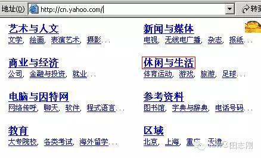

【css-04】
主题：如何理解HTML语义化？
小课堂【上海】
分享人：杨亚洲1.背景介绍
2.知识剖析
3.常见问题
4.解决方案
5.编码实战
6.扩展思考
7.参考文献
8.更多讨论
1.背景介绍
为什么会出现html语义化？
语义化的出现是大势所趋，来看看语义化的前世今生。
对于当前的 Web 而言，HTML 是联系大多数 Web 资源的纽带，也是内容的载体。 在 Web 被刚刚设计出来的时候，开发者可能不会想到它现在会达到的规模以及深入到我们生活的那么多方面。也许起初的想法很简单：用来发布 Web 内容和资源的索引，方便人们查看。但是随着 Web 规模的不断扩大，信息量之大已经不在人肉处理的范围之内了。这个时候人们开始用机器来处理 Web 上发布的各种内容，搜索引擎就诞生了。再后来，人们又设计了各种智能程序来对索引好的内容作各种处理和挖掘。所以让机器能够更好地读懂 Web 上发布的各种内容就变得越来越重要。
看一下最初yahoo的网站例子，就会明白为什么会出现HTML语义化了
那时候如果你做了一个网站，需要到各个的网站登陆页面专门登陆，等这些搜索引擎（例如Yahoo）的管理员通过后，他会给你确认放到哪个目录下面，以后人们就按照这个目录去查找！
后来，随着内容的暴增，发现这种目录搞不定了.
不仅仅是新网站层出不穷，而且随着各行各业的数字化加之的出现：每个网站的网页数量也成指数的暴增，的那种手工录入的导航方式无法满足人们的需要：覆盖的全面性、及时性都较差，所以它出现了。
所以史上最大也是最成功的搜索引擎公司诞生了

Google不按照网站而是按照关键词去发现内容，不需要你去登陆网站和网页，而通过蜘蛛主动去抓取。这个变化，成就了截止到现在的Google的辉煌！
以Google为代表的这类信息和知识发现方式无疑极大改变了人类对于信息和知识的获取，仿佛间世界就在你的键盘。但也有问题：内容太多了，我们不知道看什么；找到的内容参差不齐，我们花费了巨额的时间成本，但仍然找不到我们需要的内容。不是说我们的需要内容不存在，而是可能由于某种原因尘封在茫茫的网络大海中，如何更好更快的搜索到我们想要信息？ 所以，才出现了HTML语义化。
2.知识剖析
什么是语义化？
字面意思就是说根据我们所说的话，就能了解其中的含义。我说水，你脑海就会出现水，我说长城，你脑海绝不会出现金字塔。 开发上的“语义化”指的是：机器在需要更少的人类干预的情况下能够研究和收集信息，让网页能够被机器理解，最终让人类受益。
什么是HTML语义化？
首先标签语义化是指HTML，不是CSS, 语义化标签只是HTML，CSS不存在语义化。HTML是标签，CSS是属性。
什么是标签语义化？ 来看看最初html里标签的语义，我们看到table,就会知道这是列表，看到p，就知道这是段落，看到img知道是图片，看到input就知道这是一个表单，h1~h6是标题。 机器和人类相比笨多了，但是只要我们设定好程序，上面的标签的意思机器也能读懂。
但是也有些是无语义化的如div---division并不能呢个表示div标签里面内容的属性和表现样式
HTML 标签语义化是让大家直观的通过标签(markup)和属性(attribute)来知道其用途和作用。
判断标签是否语义化
去掉样式，看网页结构是否组织良好有序，是否仍然有很好的可读性。
简单介绍下具有语义化的html标签？
header
页眉通常包括网站标志、主导航、全站链接以及搜索框。 也适合对页面内部一组介绍性或导航性内容进行标记。
footer
页眉通常包括网站标志、主导航、全站链接以及搜索框。 也适合对页面内部一组介绍性或导航性内容进行标记。
main
页面主要内容，一个页面只能使用一次。如果是web应用，则包围其主要功能。
article
包含像报纸一样的内容= =||是这么理解的，表示文档、页面、应用或一个独立的容器。 article可以嵌套article，只要里面的article与外面的是部分与整体的关系。
section
具有相似主题的一组内容，比如网站的主页可以分成介绍、新闻条目、联系信息等条块。
如果只是为了添加样式，请用div！
small
指定细则，输入免责声明、注解、署名、版权。 只适用于短语，不要用来标记“使用条款”、“隐私政策”等长的法律声明。
strong
表示内容重要性。
em
标记内容着重点（大量用于提升段落文本语义）
mark
主要用来在视觉上向用户呈现那些需要突出的文字,标签的一个比较典型的应用就是在搜索结果中向用户高亮显示搜索关键词。
address
作者、相关人士或组织的联系信息（电子邮件地址、指向联系信息页的链接）。 如果提供整个页面的作者联系信息，一般放在页面级footer里。不能包含文档或者文档等其他内容。
progress
使用过bootstrap库都知道，它里面有一个组件就是关于进度条的组件，这里提供的新标签，也可以实现同样的效果。
blockquoto
引述文本，默认新的一行显示。
video
标签定义视频，比如电影片段或其他视频流。
audio
标签定义声音，比如音乐或其他音频流。
此外该有很多语义化标签，
例如：ul ol li p h1-h6 table thead tbody tr th td
以及h5新的与语义化标签q dfn hgroup canvas datalist summary
新的语义化标签是在太多，一一道来，实在浪费大家宝贵的时间，所以就不一一介绍，有兴趣的自己抽时间去学习吧。
不能光说不练，来让我举个栗子吧
header main footer结构
自己理解的语义化结构
3.常见问题
实现HTML语义化好处有哪些？
1.清晰的页面结构。去掉或样式丢失的时候,也能让页面呈现清晰的结构，增强页面的可读性。 。
2.支持更多的设备。屏幕阅读器会完全根据你的标记来“读”你的网页。更好的支持浏览器的阅读模式等。。
3. 去掉或样式丢失的时候能让页面呈现清晰的结构，便于团队开发和维护。在团队中大家都遵循同一个标准，可以减少很多差异化的东西，方便开发和维护，提高开发效率，甚至实现模块化开发。。
4.有利于SEO。和搜索引擎建立良好沟通，有助于爬虫抓取更多的有效信息，搜索引擎的爬虫也依赖于标记来确定上下文和各个关键字的权重。
b和strong标签 ，em标签和i标签
b就是bold，字体加粗
strong是要表达强调而字体被加粗i就是italic，字体斜体
em也是强调内容，而被倾斜i和b ,都是文字样式元素，没有任何语义，但是em和strong的语义性更强烈，对于搜索引擎的爬蛛来说更友好，能让它知道你这里面的内容的语义效果，b和i只对视觉效果进行了强调，而语义上没有帮助,html5标准已经不推荐使用b和i标签
糟糕的语义化html文档长什么样？

如果我们遇到第一种代码，真不知道该哭还是该笑
5.编码实战
6.扩展思考
基于此，在写页面结构时，我们应该注意什么呢？
（1）、尽可能少的使用没有语义的div和span元素。
（2）、在对语义要求不明显时，技能使用div也能使用p,那就使用p，以为p默认有上下边距，可以兼容特殊终端。
（3）、不要使用纯样式标签，如：b、font、u等，改用css设置。
（4）、需要强调的文本，可以包含在strong或者em标签中（浏览器预设样式，能用CSS指定就不用他们），strong默认样式是加粗（不要用b，因为没语义），em是斜体（不用i同b）；
（5）、使用表格时，标题要用caption，表头用thead，主体部分用tbody包围，尾部用tfoot包围。表头和一般单元格要区分开，表头标题用th，内容单元格用td；
CSS命名规范（id和class的命名）
更多的情况下推荐按照选择器命名的惯例进行设置，无论是 ID 还是 class，对任何东西最好总是根据它是什么而不是它看上去是什么样子来命名。
命名链接阶段三：使用微格式标记数据，微格式（Microformat）
微格式（Microformat）
Microformat，有人翻译成“微格式”，是一种对Web网页进行语义注解的方法，这种方法依托于标准的Web页面写作技术，这样引入语义信息对浏览器等所有现存的Web技术冲击最小。采用Microformat的Web页面，在HTML文档中给一些标签（Tag）增加一些属性（attribute），这些属性对信息的语义结构进行注解，处理HTML文档的软件，例如，浏览器等，如果不认识这些属性可以跳过，并不造成任何不良影响。
微格式（Microformat），是通过语意相关让内容人机可读。网页上的允许的微格式数据包括事件、人物、地点等，它可以被其它的软件检测到，并提取出相应的信息，以及对信息进行索引、搜索、跨平台的参考，把这些信息以其它形式重复使用或组合。
微格式通常附加在用于添加样式的class属性上。你可以根据数据的类型，使用某些标准的样式名来标注数据。然后，其他程序可以读取你的标记，提取数据并通过检查class属性来确定数据的含义。目前比较流行的微格式应该是：hCard。
HTML文档中的Microformat代码可以有两类：compound microformat和elemental microformat.
链接 链接27.参考文献
参考一： 知乎：html语义化
参考二： HTML语义化的应用
8.更多讨论
最后的讨论，什么是网络爬虫？